Чудеса святого Розария
История, тайны и молитвы святого Розария
Сын Мой, не удивляйся неуспеху твоих проповедей! Ты ведь возделываешь почву, которую не орошал дождь. Знай же: когда Бог решил обновить мир, Он послал вперёд дождь Ангельского приветствия, и так мир был обновлён. Поэтому призывай и людей в своих проповедях читать Мой Розарий, и ты пожнёшь великие плоды для душ. Божия Матерь святому Доминику
Эта брошюра Марианского движения священников и мирян рассказывает историю святого Розария: от явления Божией Матери святому Доминику через его великих апостолов до посланий Фатимы. Кроме того, размышление о радостных, скорбных, славных и светлых тайнах, а также наставление и все молитвы Розария.
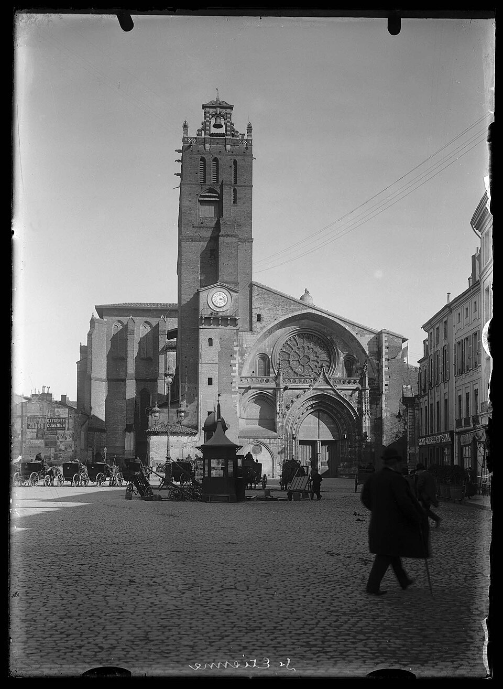
Кафедральный собор в Тулузе
Цепь спасения
Молитва Розария — одна из величайших и славнейших молитв христиан, и её чудесная сила вновь и вновь доказывала себя в великих битвах Божиих.
Но прежде всего обратим внимание на необычайные события, через которые небо проложило себе путь, чтобы уготовить псалтири Розария, в том виде, в каком её читают ныне, совершенно выдающееся место среди церковных молитв.
Когда св. Доминик (1170–1221) однажды удалился в лес близ Тулузы, чтобы молитвой и необычайными подвигами покаяния умолять Бога о помощи в борьбе против лжеучителей и в стремлении обратить грешников, ему явилась Божия Матерь и сказала: Знаешь ли ты, мой дорогой Доминик, каким оружием воспользовалась Пресвятая Троица, чтобы восстановить спасение мира?
О моя Госпожа! — ответил он, — Ты знаешь это лучше меня, ибо после Твоего Сына Иисуса Христа Ты была превосходнейшим орудием нашего спасения.
Тогда Пресвятая Дева объяснила: Знай, что главным оружием была псалтирь Розария, которая составляет основу Нового Завета. Поэтому, если ты хочешь приобрести для Бога эти ожесточённые сердца, проповедуй Мой Розарий.
Святой поднялся, полный утешения, и, воспламенённый ревностью о спасении этих народов, вошёл в собор. Тотчас зазвонили колокола, раскачиваемые ангельской рукой, чтобы собрать жителей. В начале проповеди поднялась страшная гроза: земля задрожала, солнце померкло, и непрерывный гром и мощные удары молний заставили всех слушателей побледнеть и дрожать. Их ужас возрос ещё сильнее, когда они увидели, как образ Марии, выставленный на виду у всех, трижды поднял руки к небу, призывая на них мщение Божие, если они не обратятся и не прибегнут к защите Божией Матери.
Этим чудом небо хотело умножить и распространить новое благочестие святого Розария. По ходатайству св. Доминика гроза наконец утихла, и он продолжил с таким рвением и такой силой объяснять превосходство святого Розария, что почти все жители города приняли его и отреклись от своих заблуждений. Спустя недолгое время в нравах и жизни города заметили большую перемену.1
1 Ср. св. Людовик Мария Гриньон де Монфор, Der heilige Rosenkranz, Imprimatur: Friburgi Helvetiorum, 10 июля 1929 г.
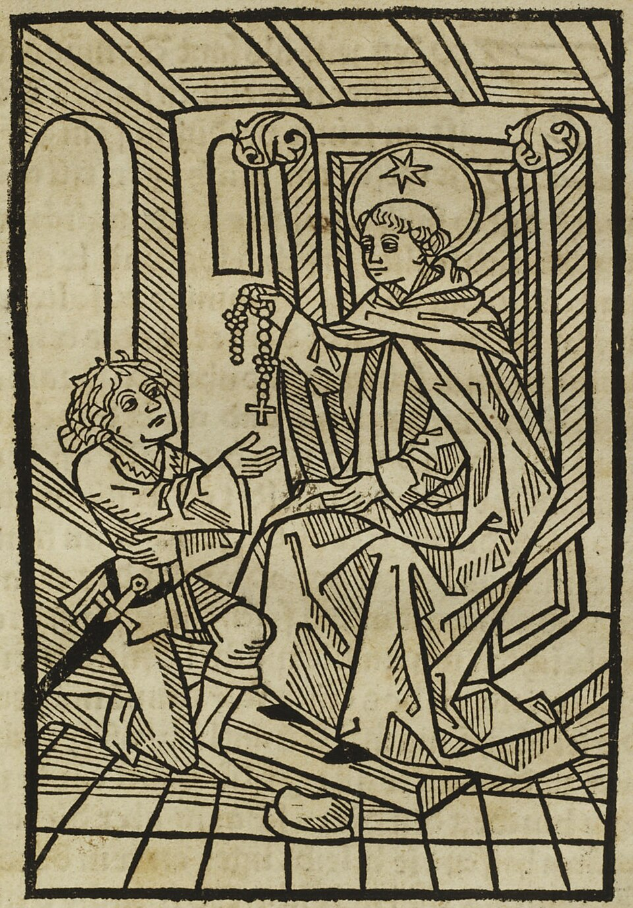
Блаженный Ален де ла Рош
Преемники св. Доминика
Поскольку со временем столь цветущее поначалу почитание Розария пришло в сильный упадок, Божия Матерь в середине XV века послала блаженного Алена де ла Рош (1428–1475), чтобы обновить это Божие дело. Она открыла ему чудесные тайны о превосходстве молитвы Розария, которые он даже подтвердил клятвой.
Пресвятая Дева, как передают, в явлении надела ему на шею цепь, в которую были вставлены сто пятьдесят драгоценных камней и пятнадцать рубинов, и заверила его: Это Я хочу духовно совершить для всех, кто благочестиво читает Мою псалтирь, и на небе они получат особые радости. Мария открыла ему также, что одна-единственная Аве Мария драгоценнее всего земного под солнцем и всех благ тела и духа.
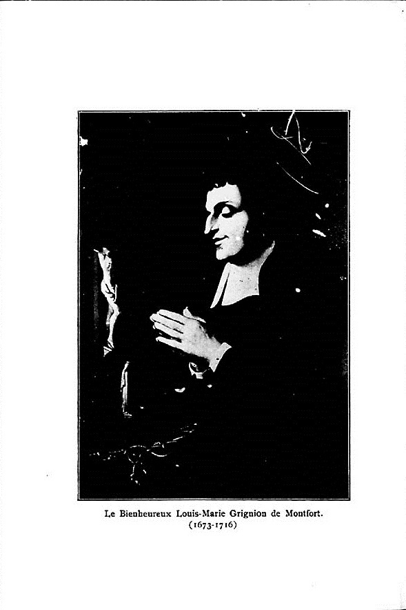
Св. Людовик Мария Гриньон де Монфор
Также блаженный Ален писал, что однажды некий слуга Божий был перенесён на небо. Там он увидел большую, сияющую книгу, в которой были записаны имена всех братьев и сестёр Братства Розария, и всё больше имён вписывали в неё св. Доминик и св. Франциск.
Но человеческое непостоянство столь велико, что в третий раз Мария избрала апостола, который должен был оживить в Церкви рвение к столь дорогому ей Розарию: Людовика Марию Гриньона де Монфора (1673–1716). При жизни он через молитву Розария обновил всю Бретань и Вандею и тем подготовил путь Божией благодати в сердца людей.2
2 Ср. Die Königin des heiligen Rosenkranzes in Valle di Pompeji, автор Eduard Winterhalter, Фрибур (Швейцария) 1973, с церковным разрешением на печать.
Хорошо прочитанная Аве Мария для дьявола — враг, обращающий его в бегство, молот, сокрушающий его, для души — средство освящения, для ангелов — радость.
Это гимн избранных, Песнь Песней Нового Завета, восторг Марии и прославление Пресвятой Троицы. Св. Людовик Мария Гриньон де Монфор
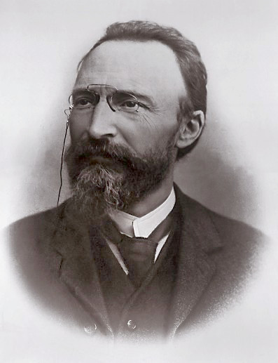
Св. Бартоло Лонго
Царица Розария Помпейская
Также чудесные события в Валле-ди-Помпеи (близ Неаполя в Италии), начавшиеся в 1872 году, подобно голосу великих апостолов Розария разнеслись по всему миру и призвали все народы и племена земли к молитве Розария. Там Мария при помощи своего ревностного слуги Бартоло Лонго (1841–1926) основала святилище, благодатное место святого Розария, которое повергло в изумление весь мир.3
Тем самым она дала миру понять, как желает почитаться как Царица святого Розария и какие милости получают те, кто призывает Её под этим титулом. Это доказывают многочисленные чудеса, обращения, исцеления больных и услышанные молитвы по всему миру.
В духе св. Доминика Папа Лев XIII написал двенадцать энциклик и несколько апостольских посланий исключительно о Розарии, чтобы призвать христиан к этой молитве. Это оружие, которое великий Папа дал детям Церкви против ярости ада, желающего уничтожить Церковь Христову.
О благодатном образе Помпейском упомянутый Папа написал Бартоло Лонго знаменательные слова: Бог воспользовался этим святым образом, чтобы вернуть сотни тысяч верующих к весьма спасительной практике святого Розария.4
3 Безнадёжно пленённый спиритизмом и оккультизмом, Бартоло Лонго испытал силу молитвы Розария, через которую Божия Матерь вывела его из этого «духовного болота». В таинстве покаяния молодой адвокат познал блаженный мир милосердной любви Божией, которая всё яснее открывала ему его призвание стать апостолом Царицы Розария. Особенно для тех, кто пленён опасными духовными течениями, его чудесное обращение — живое знамение надежды: Бог может написать прекраснейшие строки даже на самых кривых линиях жизни.
4 Ср. Die Königin des heiligen Rosenkranzes in Valle di Pompeji.
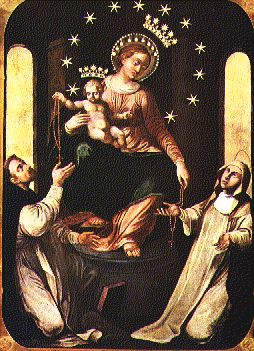
О Розарий, благословенный Марией, сладкая цепь, связующая нас с Богом, узы любви, соединяющие нас с ангелами, башня спасения против нападений ада, надёжная гавань при всеобщем кораблекрушении, тебя мы больше никогда не отпустим. Ты — наша сила в час смерти. Тебе — последний поцелуй нашей жизни, когда мы умираем.
Последним приветствием наших уст да будет Твоё сладкое имя, о Царица Розария Помпейского! О благая Матерь, Прибежище грешников, возвышенная Утешительница скорбящих, да будешь Ты прославлена повсюду, ныне и всегда, на небе и на земле! Аминь. Св. Бартоло Лонго
Мария призывает и в последние времена
Божия Матерь никогда не устаёт призывать Своих заблудших овечек. И особенно тогда, когда ад нападает с наибольшей силой, чтобы погубить души, небо умножает свои предложения благодати, как это, например, видно в Фатиме. Там Мария настойчиво просит Своих детей о покаянии, жертвах и молитве, особенно о молитве Розария.
Полностью проникнутая духом Марии, сестра Лусия из Фатимы говорит: В эти последние времена, в которые мы живём, Пресвятая Дева придала Розарию новую действенность. Поэтому нет ни одной, даже самой тяжкой проблемы, которую мы не могли бы решить через Розарий … Розарий — это цепь, которая возвышает нас к Богу и связывает нас с Ним.
Громкие события в Фатиме вызвали большой всплеск молитвы. Однако и он продолжался не так долго, как желала Мария. В сентябре 1961 года постулатор процесса беатификации Жасинты и Франсишку принёс важное послание от сестры Лусии, которую он с разрешения Святого Отца навестил в монастыре кармелиток в Коимбре. Сестра Лусия была очень опечалена и говорила о глубокой печали Божией Матери, потому что так немногие заботятся о Её послании 1917 года. Даже верующие слишком мало соблюдают Её наставления, а злые продолжают идти путём погибели. Отец, скажите всем то, что Божия Матерь часто говорила мне: многие народы исчезнут с лица земли. Россия станет бичом, который Бог избирает, чтобы наказать людей, если мы молитвой и таинствами не получим благодати обращения. Далее Божия Матерь объяснила сестре Лусии, что последними средствами помощи, данными миру, являются Розарий и почитание Её Непорочного Сердца. В этих словах Божией Матери вновь ярко светится главное послание Фатимы: Не оскорбляйте больше Бога, нашего Господа, который уже так сильно оскорблён. (13 октября 1917 г.)
Прекраснейшая семейная молитва
Розарий — прекраснейшая семейная молитва, через которую отдельные члены семьи связываются нерасторжимой духовной связью. Поэтому совместная молитва Розария должна быть сердцевиной каждой семьи.5
В своём Апостольском послании «Rosarium Virginis Mariae» Папа Иоанн Павел II объясняет: Семья, которая молится вместе, остаётся единой.
Теперь, конечно, некоторые возразят, что их супруг или дети не готовы молиться вместе, потому что отдалились от веры и таинств. В такой ситуации разумно начать в одиночку и приносить молитву Божией Матери за членов семьи, вместо них.
Если мы будем делать это упорно, то будем переживать «чудо обращения» не только в собственном сердце, но и в сердцах наших близких. Сколько же уже совершила молитва верующей матери, верующего отца или верующих бабушки и дедушки в сердцах детей и внуков! Ибо каждая Аве Мария, которую мы с доверием возносим к небу, возвращается на нас и на всех, за кого мы молимся, обращённая в благодать. Это уверяет нас св. Бонавентура, когда говорит: Мария приветствует нас благодатью, когда мы приветствуем Её Аве Мария. И святой Альфонс Мария де Лигуори говорит: Одна Аве Мария стоит больше, чем всё творение.
5 В письме кардиналу Карло Каффарре сестра Лусия из Фатимы написала меткие слова: Последняя битва между Господом и властью сатаны ведётся за брак и семью. Поэтому не удивительно, что злой враг со всей своей свитой делает всё, чтобы разрушить единство и веру в семьях.
Чтобы выкроить время и пространство для молитвы, важно отказаться от чрезмерного пользования многими средствами связи, особенно телевидением и интернетом. Великому благословению и духовным плодам, которые мы таким образом получаем, мы вправе бесконечно радоваться уже сейчас, а тем более в вечности.
Молитва Розария дома становится торжественнее и собраннее, если мы молимся перед образом или статуей Марии и при этом по возможности зажигаем свечу.
Больных и немощных молитва Розария в их страданиях поддержит и укрепит.
Совершенно особая благодать — иметь возможность читать Розарий в церкви перед Пресвятым Таинством.
Св. Мать Тереза Калькуттская призывает нас: Когда мы читаем Розарий перед Пресвятым Таинством, мы любим Иисуса сердцем Марии. Мы дарим Иисусу совершенное поклонение Марии. Мы соединяем нашу любовь к Иисусу с хвалой и совершенной любовью Марии. Иисус принимает наш час поклонения так, будто сама Мария молилась. Слабость нашей веры или бедность нашей любви не имеют значения: Мария принимает нас в Своё сердце, и Иисус принимает наше поклонение так, словно оно исходит прямо из сердца Марии, Его Матери. Непорочное Сердце Марии дополняет то, чего недостаёт нашему сердцу.
И когда мы в пути пешком, в машине, в поезде или автобусе, или выполняем работы, не требующие особой сосредоточенности, мы тоже можем читать Розарий, и мы узнаем, сколько благословения и духовной радости это нам приносит.
Так наша маленькая жизнь посреди суеты мира становится скрытым источником, который вливается в великий поток благодати, образуемый столькими жертвами и молитвами, которым дано содействовать торжеству Соединённых Сердец Иисуса и Марии.
Размышление о тайнах Розария
Божия Матерь говорила блаженному Алену де ла Рош о молитве Розария: Это очень полезная молитва, служение, которое Мне очень приятно: сто пятьдесят раз произносить Ангельское приветствие. Ещё приятнее оно Мне, и гораздо лучше поступает тот, кто произносит его с размышлением о жизни, страданиях и славе Иисуса Христа, ибо размышление — душа этих молитв.
На следующих страницах сначала приводятся традиционные 15 тайн, каждая с кратким текстом для размышления. Затем в краткой форме следуют светлые тайны. Их Папа Иоанн Павел II добавил к псалтири Розария как драгоценную жемчужину, в прославление общественной жизни Иисуса.
Ничто так не укрепляет Царство Божие внутри нас, как созерцательная молитва Розария. Св. Людовик Мария Гриньон де Монфор
Как читать Розарий?
Начало
Во имя + Отца и + Сына и + Святого Духа. Аминь. (Крестное знамение)6
Верую в Бога … (см. стр. 20)
Затем 1 Отче наш (см. стр. 20) и 3 Радуйся, Мария (Ave Maria; см. стр. 21): после имени «Иисус» вставляются три божественные добродетели:
… Который да умножит в нас веру
… Который да укрепит в нас надежду
… Который да воспламенит в нас любовь
Это начало завершается «Слава Отцу» (см. стр. 21).
Если в один день молятся несколько Розариев, то начало при каждом последующем Розарии опускается.
При каждой отдельной тайне Розария (см. стр. 23–51) сначала читается 1 Отче наш. За ним следуют 10 Радуйся, Мария с соответствующей тайной Розария, которая вставляется после имени «Иисус», например: Радуйся, Мария, … Иисус, Которого Ты, о Дева, зачала от Духа Святого.7
Затем следуют «Слава Отцу» и Фатимская молитва (см. стр. 21).
6 Многие люди имеют прекрасный обычай перед началом молитвы целовать крест Розария. Этот поцелуй — особый акт любви, которым мы благодарим нашего Искупителя за то, что Он лично умер за каждого из нас. Уже через этот поцелуй Спаситель запечатлевает в нашей душе неизгладимый знак Своей искупительной любви.
7 «Слова, которые мы произносим в молитве, — это слова Ангела, слова Святого Духа … в которых собрана вся история Израиля, история Бога с людьми. Новое в Розарии, собственно, лишь в том, что мы задерживаемся на этих словах; что мы повторяем их, потому что великие вещи от повторения не становятся скучными. Только незначительному нужна перемена … Великое становится больше, когда мы повторяем его, и мы сами при этом становимся богаче …» (Кардинал Йозеф Ратцингер, на Немецком Католикентаге 1984 г.)
Молитвы Розария
Апостольский Символ веры
Верую в Бога, Отца Всемогущего, Творца неба и земли, и в Иисуса Христа, Единородного Сына Его, Господа нашего, зачатого от Духа Святого, рождённого от Девы Марии, пострадавшего при Понтии Пилате, распятого, умершего и погребённого, сошедшего во ад, в третий день воскресшего из мёртвых, вознёсшегося на небеса и сидящего одесную Бога Отца Всемогущего, оттуда грядущего судить живых и мёртвых. Верую в Духа Святого, святую католическую Церковь, общение святых, прощение грехов, воскресение тела и жизнь вечную. Аминь.
Отче наш
Отче наш, сущий на небесах, да святится имя Твоё; да приидет Царствие Твоё, да будет воля Твоя и на земле, как на небе.
Хлеб наш насущный дай нам на сей день, и прости нам долги наши, как и мы прощаем должникам нашим. И не введи нас в искушение, но избавь нас от лукавого. Аминь.
Радуйся, Мария
Радуйся, Мария, благодати полная, Господь с Тобою. Благословенна Ты между жёнами, и благословен плод чрева Твоего Иисус.
Святая Мария, Матерь Божия, молись о нас, грешных, ныне и в час смерти нашей. Аминь.
Слава Отцу
Слава Отцу и Сыну и Святому Духу, как было в начале, и ныне, и всегда, и во веки веков. Аминь.
Фатимская молитва
О мой Иисус, прости нам грехи наши, избавь нас от огня адского, приведи все души на небо, особенно те, которые более всего нуждаются в Твоём милосердии.8
8 13 июля 1917 г. Божия Матерь в Фатиме сказала трём пастушкам: «Когда вы читаете Розарий, говорите после каждой десятки: О мой Иисус …»
Я обещаю всем, кто благочестиво читает псалтирь Моего Розария, Моё особое покровительство и великие милости. Божия Матерь блаженному Алену де ла Рош
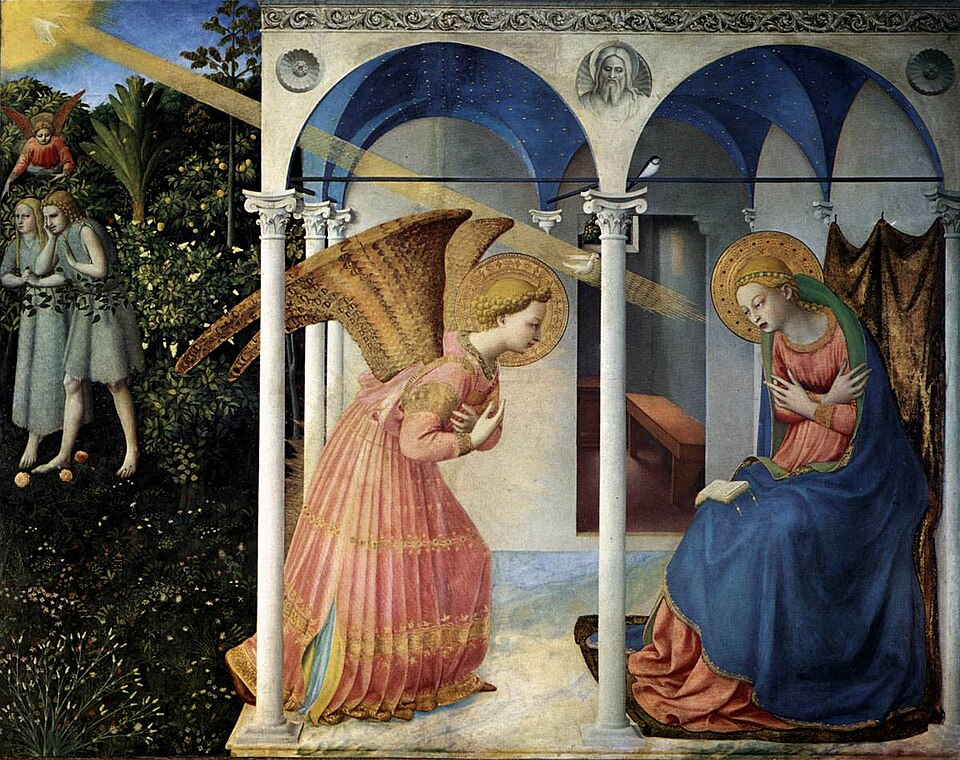
Благовещение
Радостные тайны
1-я тайна
Которого Ты, о Дева, зачала от Духа Святого
Ангел вошёл к Ней и сказал: «Радуйся, Благодатная! Господь с Тобою … Вот, зачнёшь во чреве, и родишь Сына, и наречёшь Ему имя: Иисус. Он будет велик и наречётся Сыном Всевышнего …» Мария сказала: «Се, Раба Господня; да будет Мне по слову твоему.» (Лк 1,28-38)
Приносим Тебе, о Господи Иисусе Христе, эту тайну Воплощения во чреве Матери Твоей и просим Тебя через Её заступничество о глубоком смирении и готовности ко всему, чего Бог желает от нас.
Не желай ничего иного, кроме того, чтобы святая воля Божия исполнилась в тебе совершенно. Св. Кресценция из Кауфбойрена
Тот, кто распространяет Мой Розарий, во всех своих нуждах получит Мою помощь. Божия Матерь блаженному Алену де ла Рош
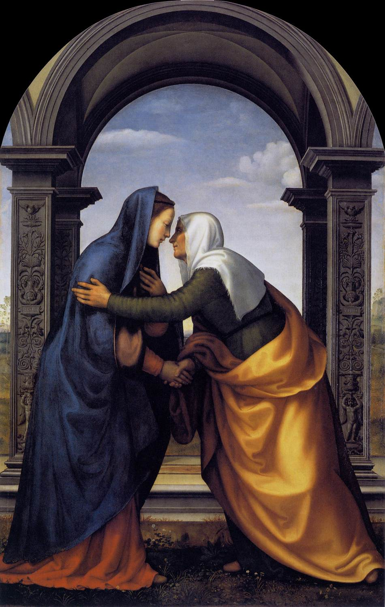
Посещение Елисаветы
2-я тайна
Которого Ты, о Дева, несла к Елисавете
Мария, встав, с поспешностью пошла в нагорную страну, в город … Она приветствовала Елисавету … И Елисавета исполнилась Святого Духа, и воскликнула громким голосом: «Благословенна Ты между жёнами, и благословен плод чрева Твоего!» (Лк 1,39-42)
Через эту тайну испроси нам, о Мария, жертвенную любовь к ближнему.
Исполняя свои обязанности с радостью и великодушием, ты способствуешь тому, что Господь дарует и другим людям многообразные милости. Св. Хосемария Эскрива
Многие души будут спасены через Розарий. Он обратит сердца, и они начнут презирать земное, любить небесное и делать быстрые успехи. Божия Матерь блаженному Алену де ла Рош
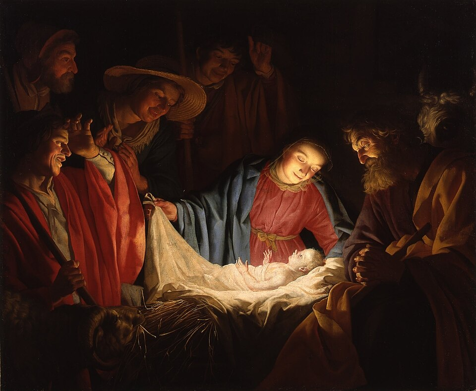
Рождество Христа в Вифлееме
3-я тайна
Которого Ты, о Дева, родила в Вифлееме
Она родила Сына Своего Первенца, и спеленала Его, и положила Его в ясли, потому что не было им места в гостинице. (Лк 1,7)
Через эту тайну испроси нам, о Мария, дух сыновства и любовь к простоте и бедности.
Сын Божий стал человеком, как и мы, не только для того, чтобы спасти нас, но чтобы мы сами стали спасителями, как Он, участвуя в спасении душ. Св. Викентий де Поль
Невозможно выразить, как сильно Мария ценит Розарий превыше всех других видов благочестия и как щедро награждает тех, кто трудится, проповедуя его, вводя и поддерживая. Св. Людовик М. Гриньон де Монфор
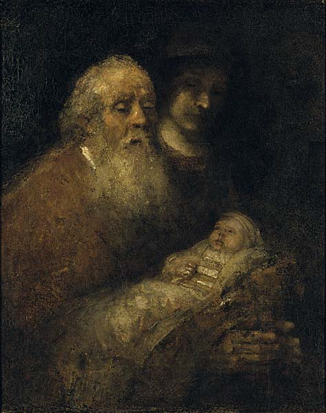
Старец Симеон принимает Младенца Иисуса на руки
4-я тайна
Которого Ты, о Дева, представила в храме
Принесли Младенца в Иерусалим, чтобы представить Его пред Господа … Симеон взял Его на руки, благословил Бога и сказал: «Видели очи мои спасение Твоё, которое Ты уготовал пред лицом всех народов, свет к просвещению язычников.» (Лк 2,22-32)
Через эту тайну испроси нам, о Мария, чистоту тела и души и благодать всегда верно исповедовать Христа.
Есть ли более славное восхваление, чем когда душа в бесконечной любви приносит себя Иисусу, а Иисус — Вечному Отцу! Марта Робен
Это тот экзорцизм, который могут читать и миряне. Чтобы не было сомнений: я наделяю Розарий силой экзорцизма! Св. Папа Иоанн Павел II
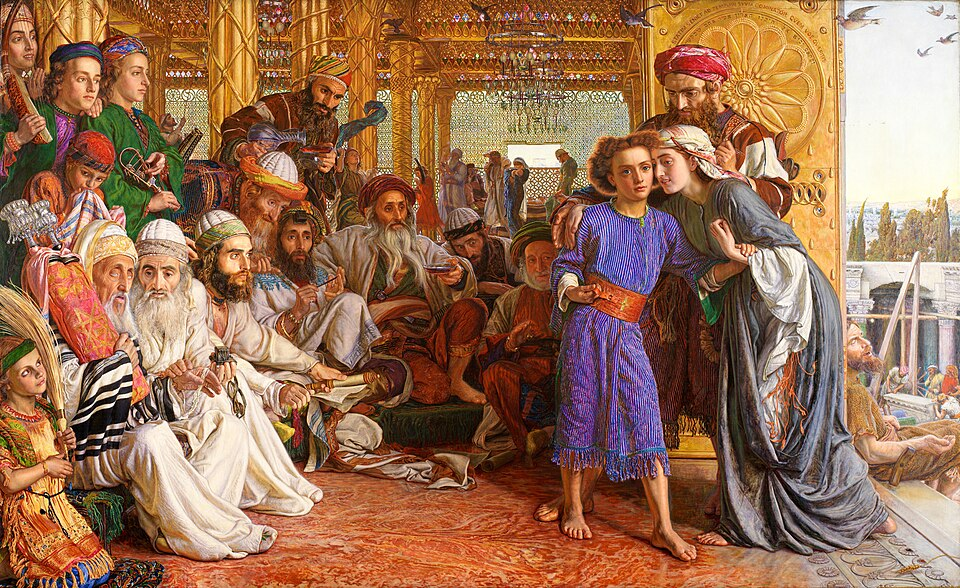
Двенадцатилетний Иисус в храме
5-я тайна
Которого Ты, о Дева, обрела в храме
Через три дня нашли Его в храме, сидящего посреди учителей, слушающего их и спрашивающего их; все слушавшие Его дивились разуму и ответам Его. (Лк 2,46-47)
Через эту тайну испроси нам, о Мария, тесное единение с Иисусом и благодать всё более возрастать в Его любви.
Совершенство начинается с того, чтобы и в мельчайших делах исполнять святейшую волю Божию. Блж. Каспар Штангассингер
С помощью Розария мы освятимся. Мы утешим нашего Господа и Спасителя и добьёмся спасения многих душ. Сестра Лусия из Фатимы
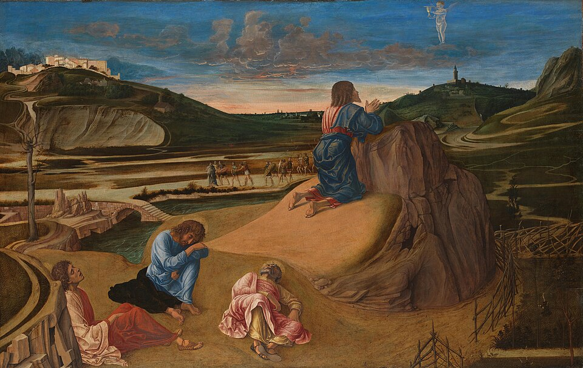
Иисус молится на Елеонской горе
Скорбные тайны
1-я тайна
Который за нас истекал кровавым потом
Он отошёл от них на вержение камня, преклонил колени и молился: «Отче! о, если бы Ты благоволил пронести чашу сию мимо Меня! впрочем, не Моя воля, но Твоя да будет.» … Находясь в борении, Он молился прилежнее; и был пот Его, как капли крови, падающие на землю. (Лк 22,41-45)
Через эту тайну испроси нам, о Мария, глубокое раскаяние в наших грехах.
В каждую чашу должна быть подмешана капля горечи. Ибо, по моему мнению, испытания очень помогают оторваться от земного; они обращают наш взор больше к небу, чем к земле. Св. Тереза Младенца Иисуса
Розарий — могучий щит против злого врага; он уничтожает порок, предотвращает грех и искореняет ересь. Божия Матерь блаженному Алену де ла Рош
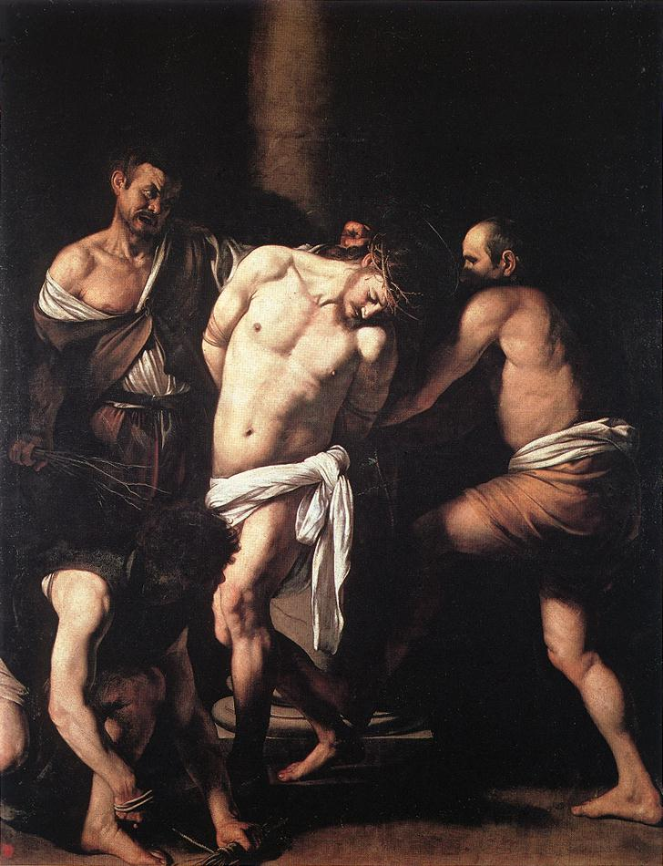
Бичевание Христа
2-я тайна
Который был бичуем за нас
«Хотите ли, отпущу вам Царя Иудейского?» Тогда опять закричали все: «Не Его, но Варавву.» … Тогда Пилат взял Иисуса и велел бить Его. (Ин 18,39-40; 19,1)
Через эту тайну испроси нам, о Мария, дух покаяния и умерщвления плоти.
Чем больше человек преодолевает себя и умерщвляет в духе, тем больше его успех, тем богаче мера благодати.
(Фома Кемпийский)
Будем помнить: любовь живёт и питается жертвами. Св. Максимилиан Мария Кольбе
Розарий — мощнейшее оружие, чтобы обратить демонов в бегство, преодолеть искушения, завоевать сердце Божие и получить от Божией Матери благодати. Св. падре Пио
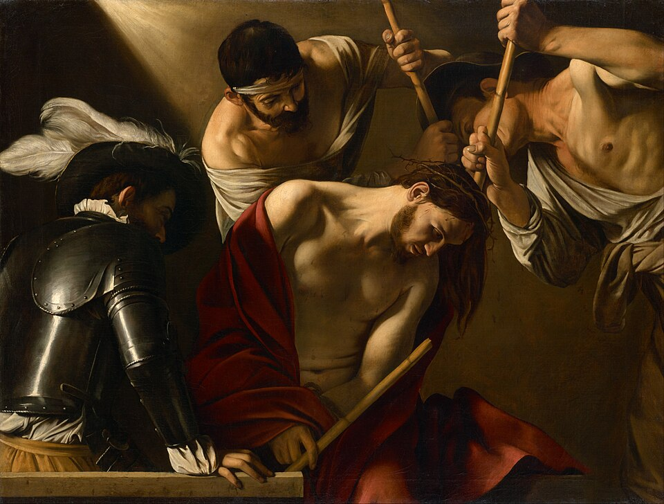
Увенчание терновым венцом
3-я тайна
Который был увенчан тернием за нас
Воины, сплетши венец из тёрна, возложили Ему на голову и одели Его в багряницу. Потом подходили к Нему и говорили: «Радуйся, Царь Иудейский!» и били Его по ланитам. (Ин 19,2-3)
Через эту тайну испроси нам, о Мария, отрешение от духа мира сего и от нашего своеволия.
Если вы в искушении, где бы вы ни находились, падите на колени перед Господом! Говорите: Господи, я отрекаюсь от сатаны и его дел, я хочу только Твоего Духа. Св. Мариам из Абеллина
Я хочу, чтобы все, кто благочестиво читает Мой Розарий, при жизни и в миг смерти стали причастны полноте божественных озарений и благодати, а также заслугам святых Божиих. Божия Матерь блаженному Алену де ла Рош
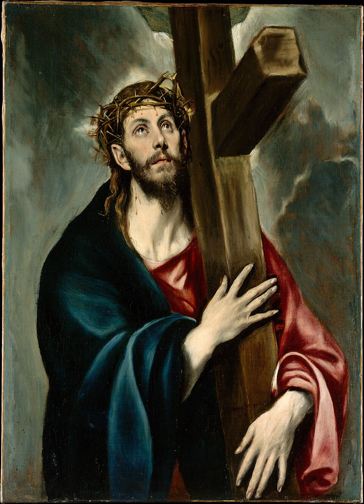
Несение Креста
4-я тайна
Который нёс за нас тяжкий Крест
Неся Сам крест Свой, Он вышел на место, называемое Лобное, по-еврейски Голгофа. (Ин 19,17-18)
Если кто хочет идти за Мною, отвергнись себя, и возьми крест свой ежедневно, и следуй за Мною. (Лк 9,23)
Через эту тайну испроси нам, о Мария, терпение в страданиях и невзгодах.
У каждого на этом свете есть свой крест. Но мы не должны нести его, как злой разбойник. Мы должны взять в пример доброго разбойника. Св. падре Пио
Верные, которые благочестиво читают Мой Розарий, не умрут без принятия святых таинств. Божия Матерь блаженному Алену де ла Рош
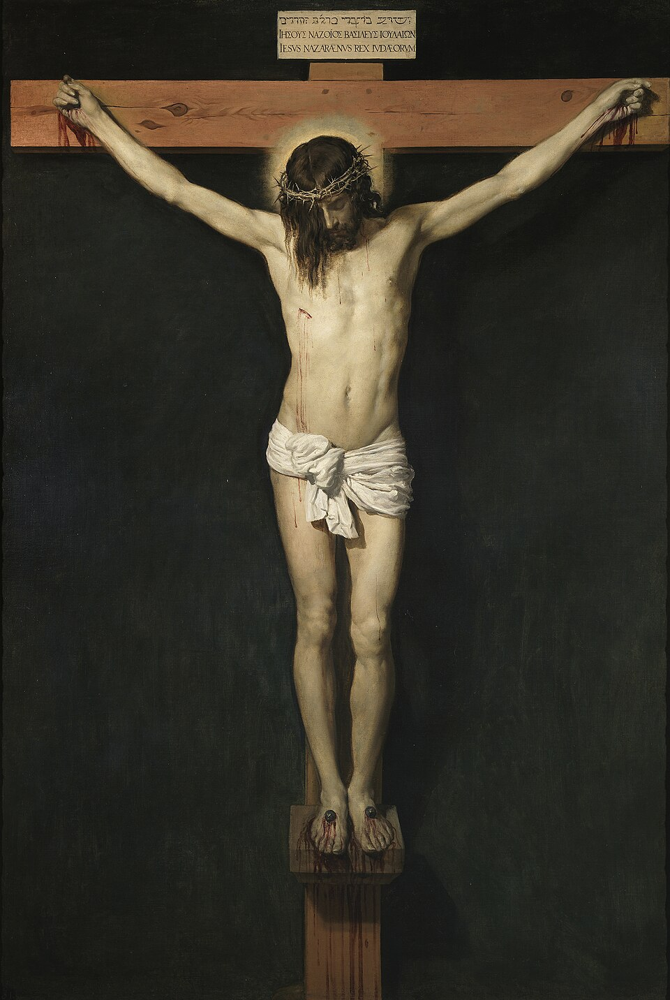
Распятие Христа
5-я тайна
Который был распят за нас
Когда воины пришли к Иисусу, они увидели Его уже умершим … Один из воинов копьём пронзил Ему рёбра, и тотчас истекла кровь и вода. (Ин 19,33-34)
Через эту тайну испроси нам, о Мария, истинное обращение и прощающую любовь Иисуса.
Крест — такое бремя, каким для птиц являются крылья: они несут их ввысь. (Св. Бернард Клервоский)
В годины испытаний пусть твоё сердце покоится на Его пронзённом Сердце. Св. падре Пио
Очень скоро Я освобожу из чистилища души, которые при жизни любили Мой Розарий. Божия Матерь блаженному Алену де ла Рош
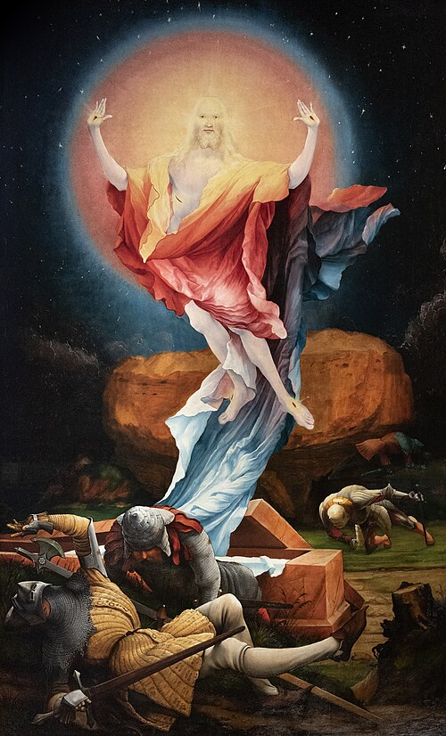
Воскресение Христа
Славные тайны
1-я тайна
Который воскрес из мёртвых
Ангел Господень, сошедший с небес, приступив, отвалил камень от двери гроба и сидел на нём; вид его был, как молния, и одежда его бела, как снег. Ангел же, обратив речь к женщинам, сказал: «Не бойтесь, ибо знаю, что вы ищете Иисуса распятого; Его нет здесь — Он воскрес, как сказал.» (Мф 28,2-6)
Через эту тайну испроси нам, о Мария, живую веру и апостольское рвение.
Принесём наши страдания Иисусу, чтобы спасти души. Будем жить для душ, будем апостолами! Св. Тереза Младенца Иисуса
Розарий — кратчайшая лестница, по которой можно подняться на небо. Блж. Карло Акутис
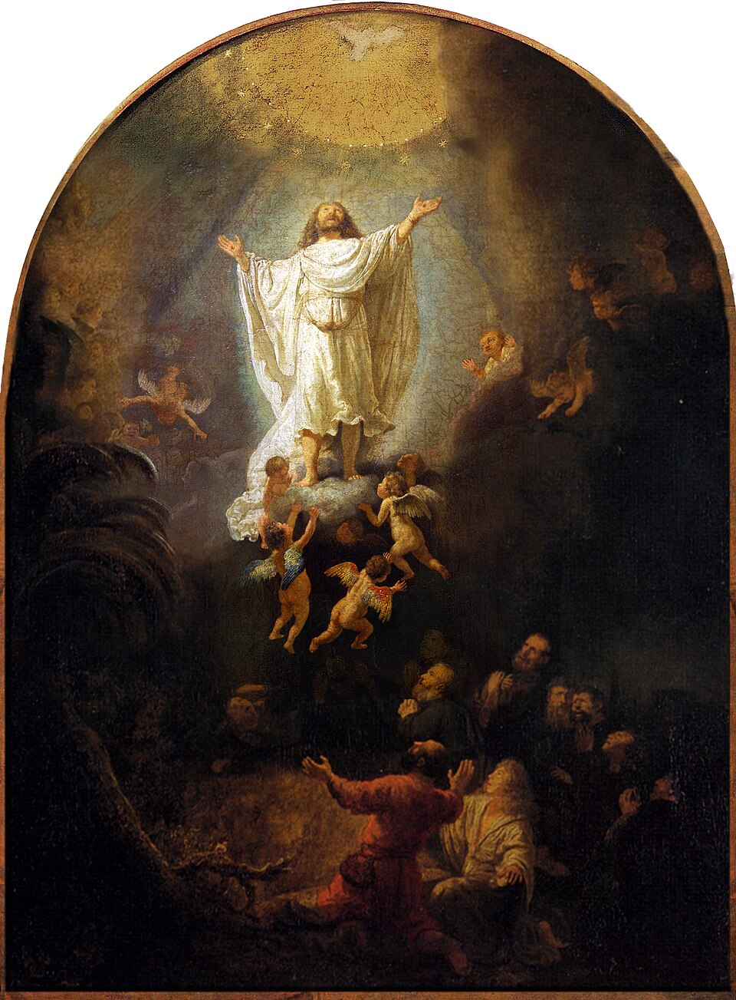
Вознесение Христа
2-я тайна
Который вознёсся на небо
И сказал им: «Идите по всему миру и проповедуйте Евангелие всей твари!» … И так Господь, после беседования с ними, вознёсся на небо и воссел одесную Бога. (Мк 16,15/19-20)
Через эту тайну испроси нам, о Мария, великую жажду неба.
Каждый день собирайте заслуги! Каждый раз, когда вас презирают, когда вас заставляют страдать, когда ломают вашу волю, радуйтесь: всё это хорошо для неба! Св. Мариам из Абеллина
Розарий возрождает добродетель и дела благочестия. Через него души получают полноту божественного милосердия. Божия Матерь блаженному Алену де ла Рош
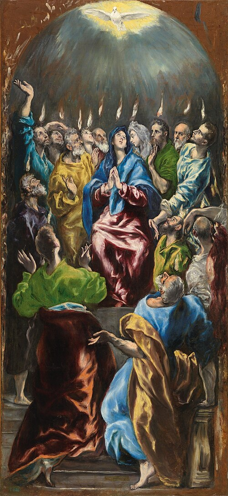
Пятидесятница — сошествие Святого Духа
3-я тайна
Который послал нам Духа Святого
При наступлении дня Пятидесятницы все они были единодушно вместе. И внезапно сделался шум с неба, как бы от несущегося сильного ветра … И явились им разделяющиеся языки, как бы огненные, и почили по одному на каждом из них. И исполнились все Духа Святого. (Деян 2,1-4)
Через эту тайну испроси нам, о Мария, дары благодати Святого Духа и великое усердие в молитве.
С дня Пятидесятницы мы — посланники, апостолы; мы свидетели этой любви. Исполненные этой надеждой, стремимся к радостной святости, которая уже сейчас расцветает в нас. Св. Франциск Сальский
Все, кто благочестиво читает Розарий и созерцает тайны, не будут сокрушены несчастьем и будут сохранены от непредвиденной смерти. Божия Матерь блаженному Алену де ла Рош
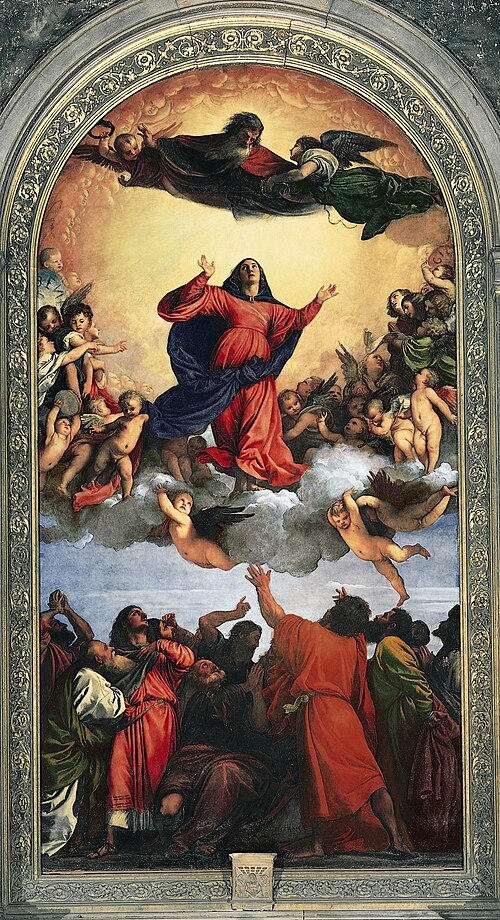
Успение Пресвятой Девы Марии
4-я тайна
Который взял Тебя, о Дева, на небо
«Величит душа Моя Господа, и возрадовался дух Мой о Боге, Спасителе Моём, что призрел Он на смирение Рабы Своей; ибо отныне будут ублажать Меня все роды; что сотворил Мне величие Сильный, и свято имя Его.» (Лк 1,46-48)
Через эту тайну испроси нам, о Мария, блаженную кончину.
Бури этой земли мы преодолеем, если пойдём вперёд с любовью и с покоем дитяти, которое знает, что его любит Отец; в опасности Он никогда не оставит его одного. Св. Тереза Младенца Иисуса
Верные чада Моего Розария будут наслаждаться великой славой на небе. Божия Матерь блаженному Алену де ла Рош
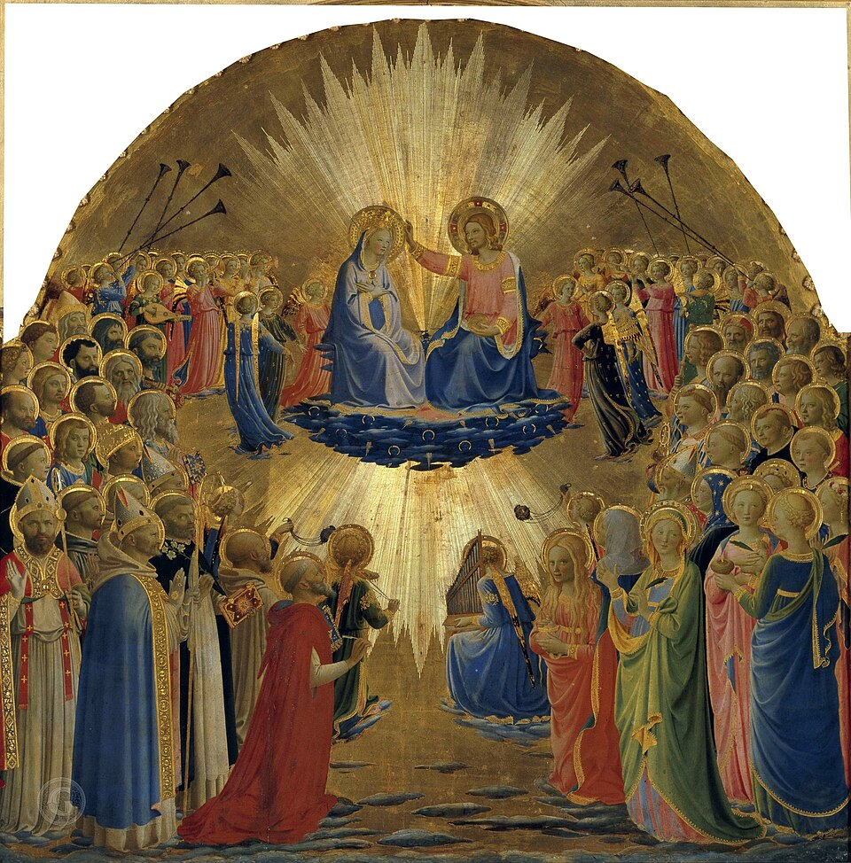
Коронование Марии
5-я тайна
Который увенчал Тебя, о Дева, на небе
И явилось на небе великое знамение: жена, облечённая в солнце; под ногами её луна, и на главе её венец из двенадцати звёзд. (Откр 12,1)
Через эту тайну испроси нам, о Мария, великую любовь к Тебе, нашей Госпоже и Царице, и благодать постоянства в служении Тебе.
В книге жизни записывается только добродетель, чтобы те, кто её проявлял, были увенчаны вечной наградой перед лицом всего мира. Доминик от Иисуса и Марии
Светлые тайны
- Который был крещён Иоанном
- Который явил Себя на браке в Кане
- Который возвестил нам Царствие Божие
- Который преобразился на горе
- Который дал нам Святую Евхаристию
Молитва приношения после Розария
Вечный Отче, через непорочные руки Марии прими этот Розарий. Да дополнит Царица Розария Своим заступничеством то, что было несовершенным в моей молитве. Да станет он для Тебя, благой Отче, достойным возмещением за мои грехи и грехи всего мира. Аминь.
Усердно прошу вас ради любви, которую я питаю к вам в Иисусе и Марии: читайте ежедневно Розарий. В час вашей смерти вы будете благословлять день и миг, когда поверили мне. Св. Людовик Мария Гриньон де Монфор
Любите Божию Матерь и заботьтесь о том, чтобы Её любили. Всегда читайте Розарий. Св. падре Пио